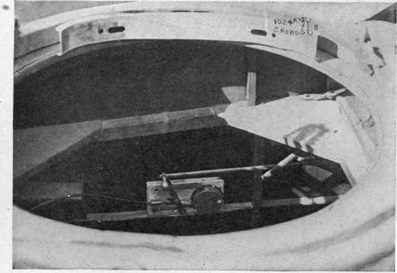
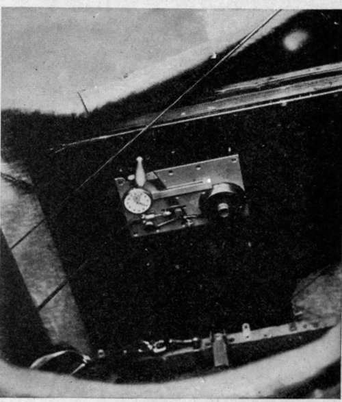

Chapter XIII. Camera Auxiliaries. Distance Controls And Indicators
Description
This section is from the book "Airplane Photography", by Herbert E. Ives. Also available from Amazon: Airplane photography.
Chapter XIII. Camera Auxiliaries. Distance Controls And Indicators
All operations connected with the exposing and changing of plates (except the changing of whole magazines) should be arranged for accomplishment at a distance. Other operations, such as changing the shutter speed or the interval between exposures in an automatic camera, which are usually done on the ground, may sometimes be satisfactorily left for performance at the camera. Conditions of extreme inaccessibility may, however, make it necessary to carry even these controls to a distance. Indicators of the number of exposures already made, and of the readiness of the camera for the next exposure, may be attached to the camera, but often are more profitably placed at a distance. Distance control and indication are especially necessary if the pilot makes the exposures—a common English practice in two seaters, and the only recourse in single seaters.
When electric power is available, electrical distance control devices are perhaps the simplest kind, as they transmit motive power without displacing or jarring the camera. Solenoids suffice for the simple pressing of releases or for counting mechanisms, while small service motors may be utilized for operations involving more work. A standing practical objection to electrical control lies in the necessity for using contacts, which are apt to be uncertain under conditions that involve vibration.
The Bowden wire—a wire cable carried inside a heavy non-extensible but flexible sheath—constitutes the most satisfactory mechanical means for transmitting straight pulls.
Fig. 69. - Bowden wire release in rear cockpit, with rod connected to similar release for the pilot.
By means of "the Bowden" a pull may be transmitted so as to be made entirely relative to two parts of the same body, calling forth no tendency of the body as a whole to move. Thus in the L camera shutter release (Fig. 50), the releasing lever with its attached counter is several feet distant from the camera. If the plate bearing the lever and sheath end is rigidly fastened down, the pressure exerted on moving the lever acts between the lever and the end of the sheath. This pressure passes immediately to the other end of the sheath, while the pull on the wire is transmitted to its farther end on the camera. In this way the conditions at the lever are reproduced, but with the advantage that, due to the flexible cable and sheath, any vibration of the lever support is damped out.
Fig. 70. - Bowden wire release with stop watch attached, for use in timing for overlaps.
Due to its stretching, there is a pretty definite limitation to the feasible length of the Bowden wire. This length is about four feet. Where according to English practice the pilot makes the exposure, a considerably longer wire and sheath are called for. In this case the effective length of the release is increased by giving the pilot a second releasing lever, connected to the first by a rigid rod (Fig. 69). The releasing lever, wire, and all mechanical parts of the Bowden release should be made much stronger than would be indicated by bench tests of the camera. In the air it is impossible to decide either by sound or by delicacy of touch whether the mechanism has acted, so that the observer is apt to pull much harder than necessary and to strain or break the release if it is weak.
The Bowden wire is used in the American service only for shutter release. In the English service it has been used for plate changing with the L camera.
Continue to:
Tags
camera, lens, airplane, aerial, film, exposure, photography, maps, birdseye